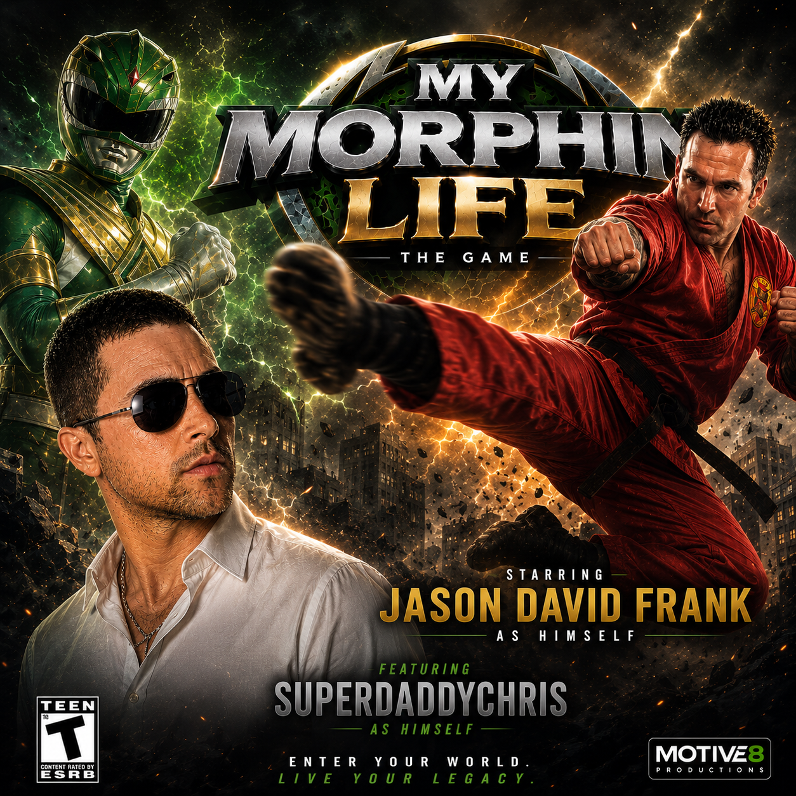
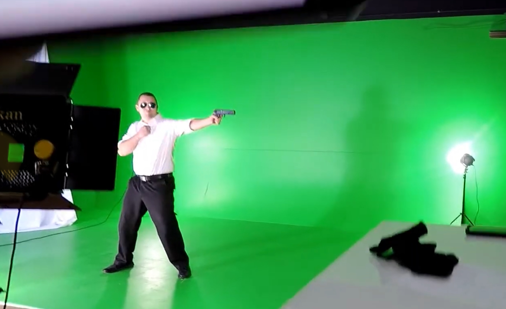
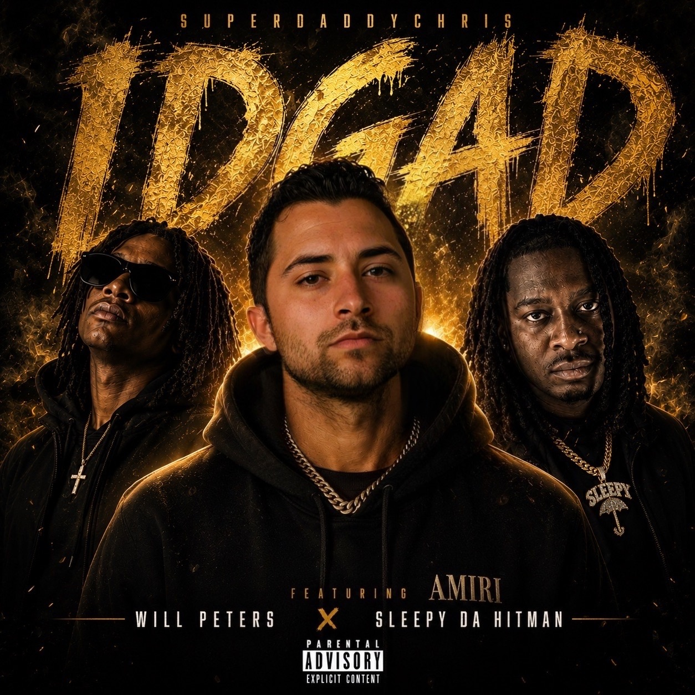

The Story
A journey of creativity, collaboration, and constant evolution. From behind the camera to behind the mic — every chapter built the foundation for the next.
More Than an Artist
Chris has achieved many things that the average person has never come close to experiencing.
From creating viral videos to appearing as a character in a video game alongside the original Green Ranger, Jason David Frank, Chris has built a career across entertainment, media, music, gaming, and storytelling. He has interviewed major creators and celebrities including Queen Naija, Liza Koshy, Jon Vlogs, and others.
His work behind the camera includes traveling with, shooting, and editing videos for Houston’s own Paul Whisky before his passing, as well as shooting and editing dance videos for Osmara Rojas, an actress in Los Angeles who was once a Houston Texans Cheerleader and Miami Heat Dancer.
Chris has also worked with and recorded music alongside artists connected to Bone Thugs-N-Harmony, including Sleepy Da Hitman and Smoke Bone. Even in the gaming world, Chris made his mark as a member of The Contenders of the Round Table.
Now, while currently serving on active duty in the U.S. Military, SuperDaddyChris has released his most personal project yet: Love Me Back.
From behind the camera to the front of the stage, Chris has continued to rise to every occasion — proving there is no lane he cannot step into and make his own.
Early Life
- From the streets of Chicago
- A father in prison
- Moving from school to school
- Mother working two jobs
- Video games became his escape
“In Chicago, I was either outside playing basketball, getting into fights, or staying home playing video games to stay out of trouble. Sonic, Mario, Super Smash Bros., Star Fox, Resident Evil 2 — those were my escape. It wasn’t until I was 13 that I wrote my first song.”


My Morphin Life Game with Jason David Frank
in Collaboration with Motive 8 Productions Chris is featured in My Morphin Life Game, a project connected to the legacy and vision of Jason David Frank. Chris was an NPC that players had to defeat.


Bone Thugs-N-Harmony's Sleepy Da Hitman
SuperDaddyChris has recorded Bone Thugs-N-Harmony's newest signed artist Sleepy Da Hitman on Chris's single IDGAD also featuring Will Peters. Chris also shot and edited Sleepy da Hitman's debut music video with Bone Thugs-N-Hamony "Show Me" as well as "Go Get It" Chris was also the videograhper for Sleepy Dat Hitman & Smoke Bone's first offical performance as signed Bone Thugs artists.

Queen Naija & Osmara Rojas
Chris has filmed and edited several dance videos for actress Osmara Rojas, R&B artist Queen Naija, Chris Sails, and Houston influencer Paul Whisky.
Queen Naija and Chris Sails in Superdaddychris Houston Youtubers
Dance video featuring Osmara Rojas, filmed and edited by Chris.
Paul Whisky Comedy Skits, Vlogs, & Tours
SuperDaddyChris shot, directed, and edited music videos, artist visuals, interviews, comedy videos, and cinematic behind-the-scenes content.
Houston influencer Paul Whisky, featured through Chris’s video work, vlogs, comedy skits, tours, and creative collaborations.
Camera / Editing
Final Cut / Timeline
Music Career
Recording artist and storyteller. His album Love Me Back captures heartbreak, growth, accountability, and emotional evolution.

Industry Collaborations
Selected collaborations across creator culture, music, content production, branded media, and entertainment.
Military Service
United States Army servicemember, 91M Bradley Fighting Vehicle Maintainer, supporting NATO operations in Poland while continuing to build his creative legacy.
.JPG)
.JPG)
.png)
.png)
.JPG)
Entrepreneurship
Founder and visionary behind the ME social media platform, building a space for creators, connection, ownership, and community.
Career Highlights
10+
Years of content creation, storytelling, and building brands
Founder
ME App social media platform
Artist
Independent music releases and visuals
Video
Music videos, interviews, dance videos, and behind-the-scenes content
Army
U.S. Army servicemember and Bradley maintainer
Gaming
Featured in My Morphin Life Video Game
Industry
Bone Thugs-N-Harmony, Sleepy Da Hitman, Osmara Rojas, and more
Media Archive
.PNG)